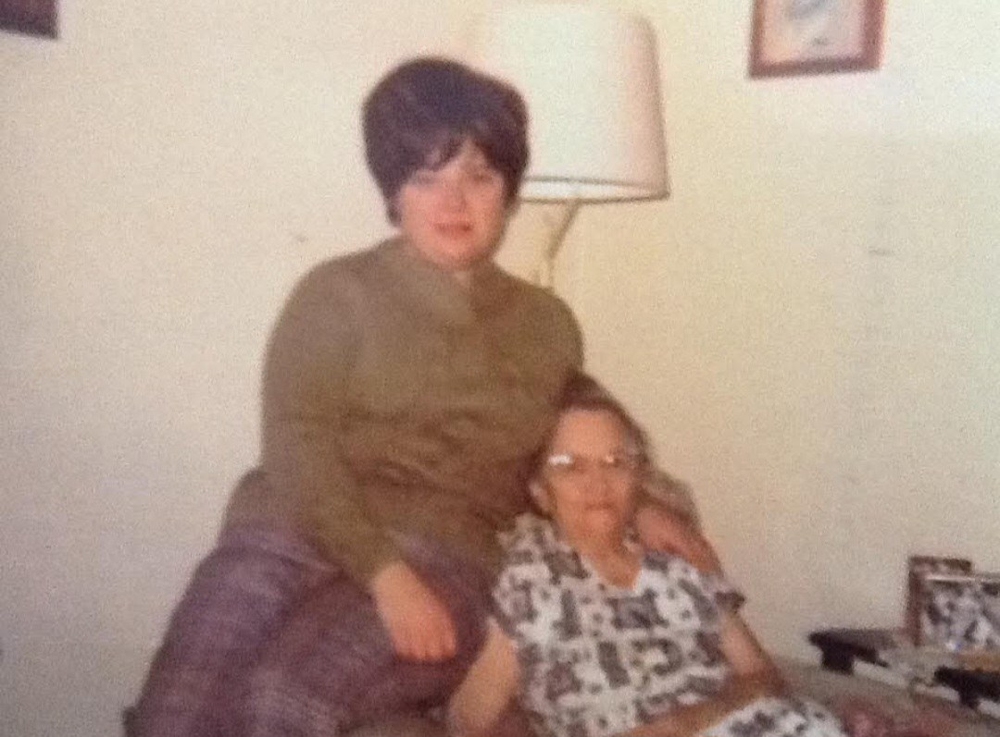
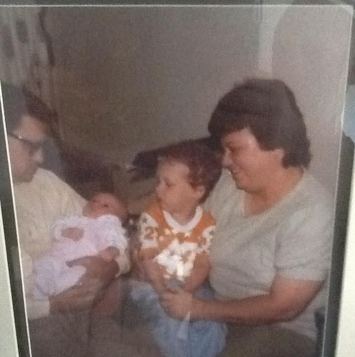
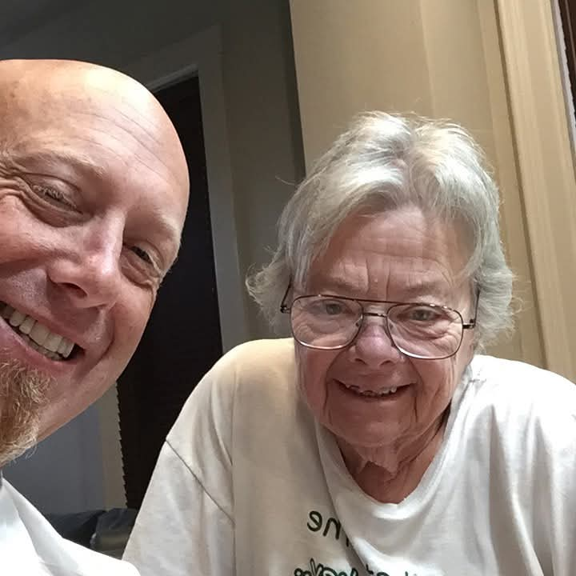

Also known as: Penny Palmer, Penny Spiess (DOCUMENTED)
Profile status: (Living)
Quick Facts
Born
1945 (FAMILY ACCOUNT) Birth year from her parents' couple profile on Geni.
Died
Not yet established.
Last residence
Not yet established.
Buried
Not yet established.
Occupation
Not yet established.
Religion
Not yet established.
Immediate Family
Additional Quick-Fact Details
Name: Penelope Jane Spiess
Also known as: Penny Palmer (1963 obituary of her grandfather); Penny Spiess (1982 obituary of her grandmother, spelled "Speiss", and 2025 obituary of her cousin Robert W. Henderson) (DOCUMENTED)
Status: Living
Parents
William Peter Palmer (SUPPORTED) — 1963 and 1982 grandparents' obituaries; 2025 obituary of Robert W. Henderson Mary Jane Williams (SUPPORTED) — 1963 and 1982 grandparents' obituaries; 2025 obituary of Robert W. Henderson
Spouse
David Michael Spiess (SUPPORTED) — Frederick Funeral Home obituary identifies David M. Spiess Sr.’s wife as Penny (née Palmer), married 50 years; corroborates the Palmer-to-Spiess name bridge but does not give Penny’s birth name or an exact marriage date.
Judith Mae Palmer (SUPPORTED) — 1963 and 1982 grandparents' obituaries; 2025 obituary of Robert W. Henderson Mary Ann Palmer (SUPPORTED) — 1963 and 1982 grandparents' obituaries; 2025 obituary of Robert W. Henderson
Penelope Jane "Penny" Spiess is a daughter of William Peter Palmer and Mary Jane Williams (SUPPORTED), and a sister of Judith Mae Palmer and Mary Ann Palmer (SUPPORTED). She is named among the grandchildren in the obituaries of her Palmer grandparents in 1963 (as "Penny Palmer") and 1982 (as "Penny Speiss"), The Frederick Funeral Home obituary for David M. Spiess Sr. calls his wife “Penny (née Palmer)” and says they were married 50 years. Together with the 1963 and 1982 Palmer obituaries naming Penny Palmer/Speiss, this supports a connection between Penny Spiess and the Palmer family, but does not provide a birth name that conclusively identifies her as Penelope Jane. The 2025 Robert Henderson obituary calls “Penny Spiess” and Mary Ann Palmer his sisters; the exact relationship of this Penny to the Gen 5 Penelope Jane, and the branch through Robert’s mother Anna V. Henderson, remains UNRESOLVED. She married David Michael Spiess (SUPPORTED).
Photo Gallery

Penny (standing), with a woman believed to be her mother, Mary Jane (Williams) Palmer. Date not known. Family collection

Penny (right) holding a toddler, beside another adult holding a baby. The others are not yet identified. Date not known. Family collection

Penny with her son, David M. Spiess. Family collection
Sources and Evidence
Obituary of her grandfather Peter Palmer, died 14 December 1963, Cincinnati (newspaper clipping, Cincinnati & Hamilton County Public Library): grandchildren include "Mrs. Judith Brewster, Mary Anna and Penny Palmer" (SUPPORTED)
Obituary of her grandmother Margaret (Lorch) Palmer, died 25 October 1982, Cincinnati (newspaper clipping, Cincinnati & Hamilton County Public Library): grandchildren include "Judy Clark, Penny Speiss, Mary Ann Palmer" (SUPPORTED)
Obituary of Robert W. Henderson, Cincinnati Enquirer, posted 9 June 2025: names his mother as Anna V. Henderson (née Palmer), and says he was “Dear brother of Terri (Randy) Gabor, Penny Spiess, & Mary Ann Palmer.” This documents the obituary’s exact Penny Spiess relationship wording. It does not identify Penny as Penelope Jane Palmer; her identity and relationship to Robert remain UNRESOLVED absent a record bridge. (DOCUMENTED obituary wording; identity bridge open)
Frederick Funeral Home obituary for David M. Spiess Sr., 2020: identifies wife as “Penny (née Palmer),” says they were married 50 years, and names Mary Ann Palmer as sister-in-law. It supports a Penny Palmer/Spiess identity and a Penny–Mary Ann sibling connection but does not state Penny’s given birth name. (SUPPORTED identity bridge)
Geni online family tree: Penelope Jane Spiess profile 6000000152540978976
Grades: (DOCUMENTED) an original record says it · (SUPPORTED) several records point to it · (FAMILY ACCOUNT) the family's own telling · (UNPROVED) a lead, not proved.
Research Notes and Open Questions
Identity bridge open: the 2025 Robert Henderson obituary calls “Penny Spiess” his sister, but does not provide her birth/maiden name. The Palmer family profile lists daughter Penelope Jane Palmer as later married Spiess. Do not treat these two records as proving that Penny and Penelope Jane are the same person or that Robert is definitely her brother.
Living status remains unresolved. Keep this profile private; no birth/death, address or other personal details added beyond the family-account year already present.
The photos remain family-captioned with unknown subjects/date where noted; do not convert the “probably her mother” caption into a verified identity.